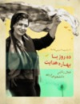

|
|
بالای ستون سمت چپ
سه شنبه14 خرداد 1387
ده روز با بهاره هدایت
 فراخوان کمپین ده روز با بهاره هدایت
فراخوان کمپین ده روز با بهاره هدایت
 بیانیه مادران پارک لاله ایران به مناسبت روز جهانی زن و حمایت از کمپین 10 روز با بهاره هدایت
بیانیه مادران پارک لاله ایران به مناسبت روز جهانی زن و حمایت از کمپین 10 روز با بهاره هدایت
 کلاژ نوشته فعالان جنبش زنان به مناسبت 8 مارس و کمپین ده روز با بهاره هدایت
کلاژ نوشته فعالان جنبش زنان به مناسبت 8 مارس و کمپین ده روز با بهاره هدایت

titre documents joints
-
info document (PDF - 494.8 kb)
-
info document (PDF - 74.6 kb)